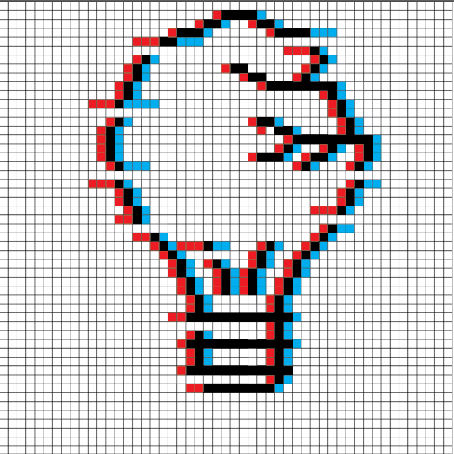

home pagina
welkom
Heb je ooit vol spanning een hackvideo bekeken, om vervolgens teleurgesteld je keuken (en zelfrespect) op te ruimen? Je bent niet alleen. In Hacks & Flops nemen we elke week één briljante "lifehack" onder de loep die je leven zou moeten veranderen, maar meestal alleen je humeur verpest. We graven diep naar de oorsprong van deze fantastische mislukkingen, vragen experts waarom iemand in vredesnaam dacht dat dit een goed idee was, en proberen het vervolgens zelf uit. Spoiler: dat gaat vaker fout dan goed. Verwacht een mix van oprechte nieuwsgierigheid, mislukte experimenten en een stevige dosis sarcasme. Kortom, als je graag kijkt hoe anderen falen zodat jij het niet hoeft te doen: welkom thuis!
begin meteen met het ontdekken van de hacks & flops
hieronder!
aflevering 1
"We testen de meest belachelijke en veelbelovende lifehacks van het internet... met rampzalige resultaten! 🤦♂️😂 Van DIY-projecten die je keuken zouden moeten redden tot 'geniale' trucjes die je leven makkelijker zouden maken — we probeerden ze allemaal. Spoiler: het internet liegt. Mis onze hilarische pogingen en gigantische fails niet! 👇"